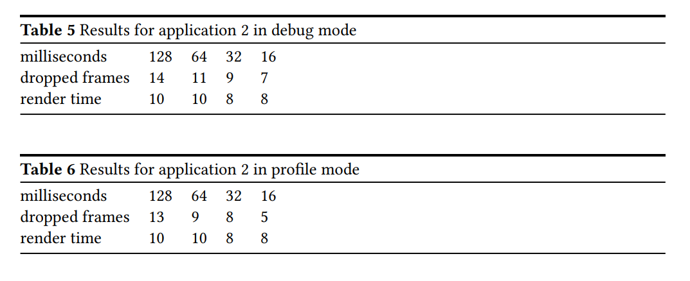
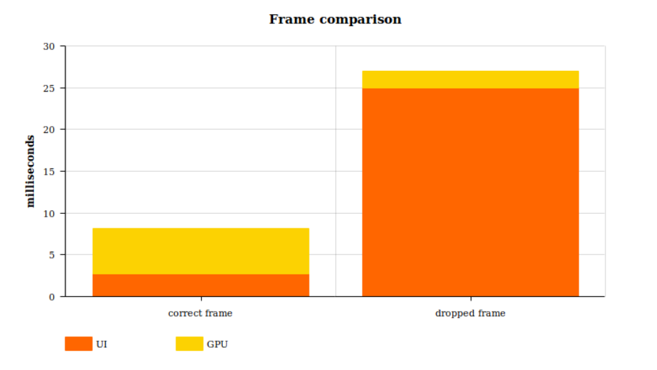
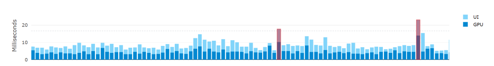

Flutter vs React Native
Análise de performance
O mercado mobile
No mercado global de sistemas operacionais móveis dois sistemas operacionais dominam: o Android e o IOS. Juntos possuem mais de 99% de participação no mercado (2018), e isso não parece que vai mudar tão cedo. Por conta disso, existem muitos frameworks que fornecem soluções de desenvolvimento de aplicativos de forma nativa, chamado de desenvolvimento multiplataforma.
Desenvolvimento nativo
Esse método de desenvolvimento é muito eficaz pois reduz drasticamente o custo de manutenção das aplicações, já que o framework permite que o app seja compilado tanto para iOS quanto para Android. Tanto o Flutter quanto o React Native prometem ser igualmente rápidos no quesito performance.
A construção de uma aplicação tanto no Flutter quando no React Native é feita pela estruturação de dados e lógica em componentes que podem ter algum tipo de estado interno, e esses componentes formam uma hierarquia baseada na composição, já que cada componente é responsável por renderizar a si mesmo na tela. Um exemplo simples para entender melhor é imaginar uma lista com botões: a lista seria o componente pai com componentes filhos na forma de clicar nos botões. Os pais não precisam saber como são os filhos, apenas onde eles vão estar localizado na tela. Isso pode ser feito passando restrições para os botões para que eles podem renderizar dentro das restrições herdadas. Flutter e React Native também compartilham outras semelhanças, como o suporte ao paradigma de programação reativa. Seu principal objetivo é resolver os conflitos comuns com o manuseio de atualizações de dados na tela do usuário, o que facilita o rastreamento das atualizações do estado interno dos aplicativos.
Construção React Native
O React Native é escrito com a junção de JavaScript e JSX. Começou como uma extensão do
biblioteca já existente React para a web.
JAVASCRIPT
Um thread JavaScript executa o código que foi escrito para seu aplicativo em JSX e JavaScript. Esse encadeamento alimenta as atualizações visuais no encadeamento da interface do usuário, e qualquer tarefa de execução longa será em quadros perdidos perceptíveis no lado da interface do usuário.
UI THREAD
O encadeamento da interface do usuário atua como o encadeamento principal da estrutura. Tem acesso aos equivalentes nativos da interface do usuário
e trata da comunicação entre framework e sistema operacional. Se este fio for parada por uma execução pesada, provavelmente resultará em uma renderização perdida.
Construção Flutter
Flutter é escrito na linguagem de programaçãoDart. a escolha dessa linguagem é
principalmente devido à compilação antecipada e algumas preferências como ter interfaces e
classes abstratas. O princípio principal por trás do Flutter é que a interface do usuário é construída apenas com widgets
que descrevem como sua visão deve ser dada o seu estado atual.
UI THREAD
Embora seja chamado da mesma forma que o thread do React Native, aqui ele não deve ser tratado como o mesmo porque fazem coisas completamente diferentes. o objetivo principal do thread de interface do usuário do Flutter é executar o framework do Flutter e o código do aplicativo escrito em Dart. Todo esse trabalho é
feito no Dart VM. Quando um aplicativo Flutter cria um frame para exibir, a UI Thread cria uma árvore de camadas e a envia para a GPU no dispositivo para renderizá-la. este segmento não deve ser usado para cálculos pesados, pois irá resultar em FPS mais baixos.
GPU THREAD
O encadeamento da GPU não pode ser acessado diretamente pelo código feito em Dart. Ele é executado pelo próprio framework e seu principal objetivo é receber a árvore de camadas enviada pela UI Thread e exibi-lo conversando com a GPU. Se esta etapa estiver lenta, é causado por algo do próprio código Dart.
Como o Flutter e React Native compilam os aplicativos de forma nativa?
Quando um aplicativo escrito em Fluer ou React Native é executado no iOS ou Android, ele
tem que lidar de alguma forma com a comunicação com o sistema operacional.
No caso do React Native
para o Android, é feito através de uma ponte: elementos de UI declarados no React Native
Application são compilados em seus equivalentes nativos, o que significa que todos os componentes disponíveis têm um correspondente nativo direto. o aplicativo é então executado em um JavaScript separado, ao interagir com o aplicativo, a comunicação entre React Native e
os componentes nativos é feito através dessa ponte.
No Flutter a abordagem é diferente para sua comunicação com o nativo subjacente do sistema. Em vez de fazer com que seus componentes de interface do usuário correspondam a equivalentes nativos, eles usam seus próprio mecanismo de renderização. O mecanismo Flutter é compilado com o NDK do Android e o código Dart
é compilado em código nativo (no Android, Java, por exemplo).
Medição de performance
A "suavidade" no uso do aplicativo é a definição mais visual para a medição da quantidade de quadros por segundo que o app irá responder. Se um aplicativo estiver rodando a 60 FPS e cair repentinamento para 30 FPS durante uma animação de troca de página, por exemplo, será evidentemente notada pelo usuário. Para evitar que isso aconteça não podemos simplesmente bloquear a thread que executa a aplicação. Para entregar uma taxa de atualização de 60 FPS a resposta da aplicação deve ser de aproximadamente 16 milissegundos. Se o código incluir uma requisição computacional pesada que levasse, por exemplo, 160 milissegundos, isso resultaria em 10 quadros descartados a cada segundo, fazendo com que o aplicativo parecesse mais complexo. No código escrito não temos muito controle sobre quanto trabalho é feito em segundo plano pelo framework. No caso de uma tarefa curta simples, onde esperamos que o aplicativo seja executado em velocidade máxima, o framework ainda pode sofrer com a perda de quadros se for mal otimizado.
Estado e renderização
Cada Componente em React Native e Widget em Flutter pode ter um único estado. 'at state' pode conter qualquer coisa que queiramos armazenar. Por exemplo, um campo de entrada poderia armazenar a entrada escrita salva dinamicamente sempre que um caractere fosse adicionado ou removido. Cada vez que um estado é alterado em qualquer estrutura, o elemento que mantém o estado se marca como sujo. Marcar como sujo informa ao framework que o elemento específico foi alterado e precisa ser renderizado novamente. Quando nenhuma mudança nos estados ocorreu, a estrutura está basicamente ociosa. Com isso em mente, podemos ter controle total de como o framework deve funcionar e a renderização ocorra novamente.
Métodos de comparação
Para realizar a comparação de desempenho pode-se adotar aplicações com funcionalidades semelhantes implementadas usando Flutter e React Native. O propósito é testar os frameworks fazendo várias chamadas de rerenderização. A medição se concentrará na contagem da quantidade total de quadros que foram descartados durante a execução de um aplicativo de teste em menos de 30 segundos. Os testes foram feitos com a diferente frequência das chamadas de re-renderização que serão definidas com a ajuda de um tempo interno. Exemplos didáticos de códigos em ambos os frameworks que nos fornecem de maneira prática uma análise de performance:
Flutter
Timer. periodic (Duration( milliseconds : widget. milliseconds ) , (Timer t){
2 setState (() {
3 counter += 1;
4 });
5 }) ;
6
}
React Native
Timer. periodic (Duration( milliseconds : widget. milliseconds ) , (Timer t){
setInterval (() =>
2 this . setState ( previous => (
3 {counter : previous . counter + 1}
4 ) ) , this . state . milliseconds ) ;
}
Discussão
A quantidade total de quadros descartados para o aplicativo em ambos os framrworks não diferem muito. Podemos analisar que o React Native teve um desempenho melhor. A suposição foi baseada no fato mencionado anteriormente, já que o Fluter não precisa se comunicar com o sistema subjacente através de uma ponte. Alguns estudos feitos na internet por desenvolvedores experientes nos mostram uma relação na execução do código mencionado anteriormente:



Linha do tempo de performance do Flutter
É interessante de observar a diferença entre esses dois quadros que é de aproximadamente 20 milissegundos, e o tempo médio de renderização para este caso de teste específico para quadros foi de 10 milissegundos, o que significa que o quadro perdido levou mais que o dobro do tempo.
Qual o mais ideal?
O Flutter é mais fácil de usar, pois é mais resistente a atualizações do sistema. Isso significa que quando o iOS ou Android atualizar o sistema operacional, o aplicativo permanecerá o mesmo. Pelo contrário, o React Native depende de elementos nativos, portanto, quando a atualização for lançada, alguns problemas poderão aparecer no aplicativo. Atualmente, o Flutter suporta Android 4.1+ ou iOS 8+, enquanto o React Native suporta Android 4.1+ e iOS 10+.
A maior diferença entre React Native e Flutter é que o Flutter possui plugins desenvolvidos pela equipe do Google, como geolocalização e mapeamento. Infelizmente, o aplicativo React Native funciona melhor com aplicativos de localização única e não requer rastreamento.
No geral, Flutter e React Native são ótimas opções para economizar tempo e dinheiro no desenvolvimento de aplicativos móveis. Qual estrutura escolher dependerá das preferências do desenvolvedor e da empresa.